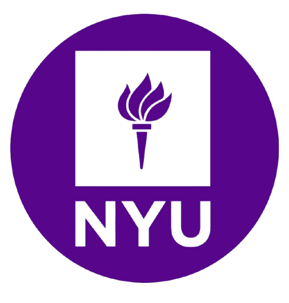

Programs
Programs for NYC Teens
Explore programs, internships, leadership opportunities, and experiences available to students across New York City.
Featured Programs
SYEP
Paid summer jobs and career development opportunities for NYC youth ages 14–24.
Closed • Reopens in Spring
Learn MoreSEO Scholars
A free college prep program that helps students prepare for college and beyond.
Grade: 9th
Cost: Free
Open
Learn MoreNYPL Teen Programs
Leadership, learning, internships, and volunteer opportunities for NYC teens.
Ages: 13–18
Cost: Free
Open
Learn More
NYU STEP
STEM and college preperation program for highschool students.
Ages: Grades 7-12
Cost: Paid fee
Open
Learn More